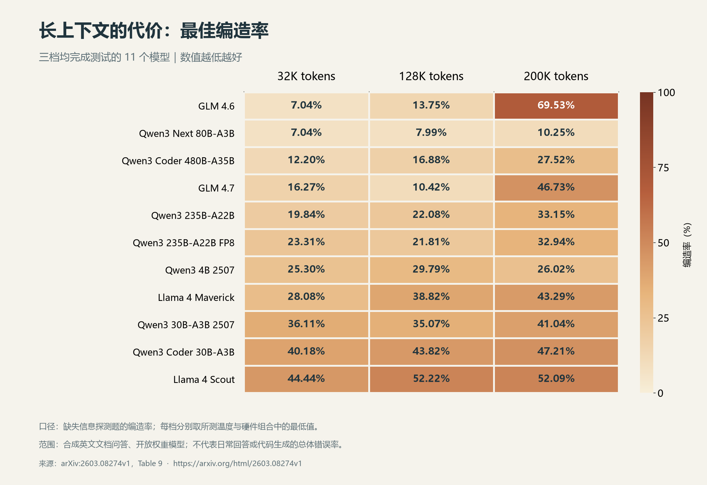

AI CODING / 提效实践 · 工作流与人的成长
01 — 开场
AI 写得很快，
为什么我还
没下班？
AI Coding提效分享 by 戴明昆
AI Coding 提效实践：工作流与人的成长从交付速度，讲到可负责的范围
全篇主线 02 — 两个层次
提效有两个层次
先优化一次任务的效率，再在多个任务组的实践中提升人的能力。
01
目标与计划范围 · 约束 · 验收标准
执行与上下文有效信息 · 及时纠偏
验证与复用运行证据 · 提交 · skill
这次怎么做得更好？下次我能负责更多什么？
第一层 / 任务内提效 03 — 开工前
先判断任务，再决定 plan 的深度
plan = 开工前说清目标、改动范围和验收标准。
改一行 plan，
往往比返工一段代码
更划算。
目标要解决什么问题？
边界这次做什么、不做什么？
验收什么证据说明做对了？
小任务几句话走完，复杂任务再正式展开。
第一层 / 任务内提效 04 — 流程与上下文
流程，是人的外置上下文管理
把必须记住的东西写下来，给人的注意力装上护栏。
01 / 需求目标与边界
做什么 · 不做什么
什么算完成
把需求从脑子里挪出来→
02 / 设计方案与取舍
改哪里 · 为什么这样改
影响到谁
把决策依据留下来→
03 / 开发实现与状态
已完成 · 待处理
排除了哪些错误路径
把当前进度讲清楚→
04 / 测试验收与证据
预期与实际
失败路径与运行结果
把完成标准落实到证据
换会议室之前，记得把白板带走。
换题另开会话探索走支线按信噪比整理
交接留下四样东西
目标与边界已确认决策代码与环境状态下一步验收

长上下文也有代价多数模型编造率上升，幅度不同。论文表 9 / 点击图查看完整数据 ↗
流程按任务轻重展开；会话按信息质量切换。
第一层 / 任务内提效 05 — 验收现场
测试通过之后，还要追到真实结果
我的一个真实经历“精度乱码已经解决，问题彻底修复了吗？”
→
→
→
点击上方状态，沿真实链路检查先核对改动范围：目标问题是否解决，是否引入了无关修改？
过程控制及时插话 · 喂现实 · 陷入循环就回头审方案
结果控制给操作序列 · 对照预期与实际 · 按影响设置确认点
第一层 / 任务内提效 06 — 复用与持续跟进
把重复工作，交给 skill + 定时任务
skill 固化怎么做；定时任务安排什么时候做。
开发中的同类任务 / 按需调用skill：复用一套流程
agentos-wsl-deployment把“上次怎么装好的”，
变成“这次有据可依”。
读取当前文档核对环境与配置按顺序部署排障端到端验收
需要持续掌握信息的角色 / 按周期跟进定时任务：让信息按时来
例如：每日动态简报、每周变化汇总
- 少一点重复查找
- 按约定周期收集、整理更新
- 少一点遗忘与遗漏
- 把持续跟进变成固定节奏
- 少一点信息噪声
- 聚焦新增变化，带上时间与来源
怎样写好 skill？一个目标 · 触发清晰 · 输入输出明确 · 用真实任务验证
可用 $skill-creator 起草，再从实践中迭代。官方编写指南 ↗
从任务效率，走向人的成长 07 — 转折
生成速度，已经超过我的判别速度
一个人的产出，取决于他理解的范围 + 他能验证的范围。
第二层 / 人的提升 08 — 先认识债务
代码写完，三类债务仍可能增长
欠在实现里，欠在理解里，也欠在没有留下来的“为什么”里。
01 / 欠实现质量技术债务
改这个功能，
为什么要连带
改这么多处？
缺少易于维护、
能够演进的实现。
02 / 欠理解认知债务
它怎么工作？
改它会影响什么？
功能上线了，没人说清
错误处理与权限边界。
03 / 欠为什么意图债务
当初为什么这样设计？
哪些条件不能破坏？
默认值看起来合理，
选择理由却没有留下来。
实现、理解、决策依据，三者都需要有人负责。
Storey · 三类债务概念框架 ↗
第二层 / 人的提升 09 — 再行动，再积累
把债务补回来，把关键练习留下来
技术债务补实现明确边界 · 小步交付 · 独立验证 · 持续整理
认知债务补理解读代码 · 走链路 · 做实验 · 自己讲清楚
意图债务补理由记录目标、约束、取舍，以及放弃的方案
AI 完成工作的同时，也可能拿走你的练习机会。
查文档、提出假设、排错和写测试，都曾在训练你的判断力。
先预测，再求解释陌生机制做小实验换条件，检验迁移收尾时自己讲清楚
任务完成之后，还要问一句：我这次学会了什么？推荐阅读《学习能力决定你的职责范围》
模型在迭代，人也要迭代 10 — 持续更新自己
苟日新，日日新，又日新
—— 商汤盘铭，《大学》引用 出处 ↗从代码补全到任务委托，模型与工具持续扩展能力边界。
今天需要反复提示的做法，明天可能成为模型的默认能力。经验会折旧。人要持续扩大理解、判断和可负责的范围。
每次协作后，给自己做一次复盘
01 / 补理解我真正理解了什么？原理 · 边界 · 失败路径
02 / 更新经验哪些做法已经过时？旧提示词 · 旧流程 · 新默认能力
03 / 扩大职责下次能独立负责什么？把结论变成笔记、skill 与新练习
别只记录 AI 完成了什么，也记录自己学会了什么。